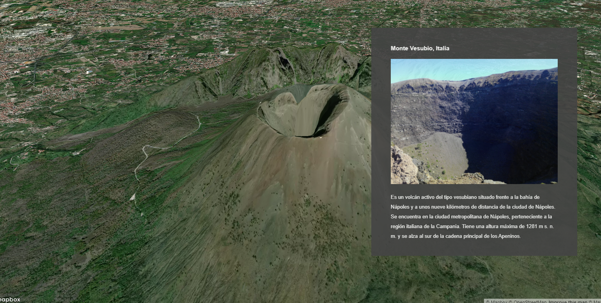

StoryTelling
Introducción
Los Storytelling o StoryMaps són una combinación de mapas con textos narrativos, imágenes y contenido multimedia que nos permite crear un hilo narrativo para contar una historia
Es un recurso muy utilizado por ejemplo en publicaciones digitales.
Si tenemos una historia que contar con una mapa, nos serà una herramienta muy útil.
Ejemplo de StoryTelling Save the Nile publicado por AlJazeera
Post 8 compelling stories told with the Storytelling solution
Información y templates
¿Cómo empezar?
- Mapbox ofrece un template para empezar a crear histórias sin apenas programación, básicamenten sólo habrá que editar un archivo de configuración.
-
Vamos descarganos datos/storytelling.zip y descoprimiremos su contenido dentro del directorio de trabajo geoweb
-
Observaremos que tenemos tres nuevos archivos
| Archivos | Description |
|---|---|
| storytelling.html | Archivo principal basado en template de mapbox |
| config.js | Archivo de configuracion |
| helper.html | Mapa de ayuda para capturar coordenadas i vistas |
Para saber más:https://github.com/mapbox/storytelling#getting-started
Para ver toda la sesión 4 ver Videos 5 y 6
Nuestro StoryTelling
- Vamos a crear un storyTelling sobre los principales volcanes en activos del mundo
Paso 1: Visualizamos storytelling.html

-
Si hacemos scroll veremos que sólo tenemos un volcan
-
Necesitamos entender y editar el archivo config.js para poder añadir más contenido
Paso 2: Abrimos config.js
- Cambiamos el access token y ponemos el nuestro
var config = {
style: 'mapbox://styles/mapbox/satellite-v9',
accessToken: 'pk.eyJ1IjoiZ2lzbWFzdGVybTIiLCJhIjoiY2plZHhubTQxMTNoYzMza3Rqa3kxYTdrOCJ9.53B1E6mKD_EQOVb2Y0-SsA',
showMarkers: false,
markerColor: '#3FB1CE',
theme: 'dark',
use3dTerrain: true,
title: 'Volcanes',
subtitle: 'Los principales volcanes activos del mundo',
byline: 'M2B ',
footer: 'Source: Wikipedia',
chapters: [
{
id: 'volcan1',
alignment: 'left',
hidden: false,
title: 'Eyjafjallajökull, Islandia',
image: 'https://upload.wikimedia.org/wikipedia/commons/e/e4/Eyjafjallaj%C3%B6kull_first_crater_20100329.jpg',
description: 'También conocido como Eyjafjöll,2 o Eyjafjalla,3 es un volcán situado al norte de Skógar, en la región de Suðurland, al sur de Islandia.4 Tiene entre 1651 m y 1666 m de altitud, y ha estado moderadamente activo en los últimos 8000 años.',
location: {
center: [-19.62, 63.63],
zoom: 13.5,
pitch: 60,
bearing: 0
},
mapAnimation: 'flyTo',
rotateAnimation: true,
callback: '',
onChapterEnter: [
// {
// layer: 'layer-name',
// opacity: 1,
// duration: 5000
// }
],
onChapterExit: [
// {
// layer: 'layer-name',
// opacity: 0
// }
]
}
]
};
Las principales opciones del documento config son:
Items en negrita son obligatorios.
style: Url estilo de MapBox , puede ser un nuestro propio
accessToken: Mapbox access token.
showMarkers: Mostrar un marker.
markerColor: Color hexadecimal del marker.
theme: Tema básico CSS (light o dark).
use3dTerrain: Activar 3D terrain. (Optional)
title: Título de la história. (Optional)
subtitle: Subtítulo (Optional)
byline: Créditos del autor. (Optional)
footer: Citatión de fuentes.
chapters: Es una matriz que contiene cada una de las visualizaciones (ítems) de la história
id: id único que se assigna a un HTMLidde undiv.alignment: Define dónde va aparecer el texto de la história. Las opciones son;center,left,right, yfull.title: Título de la sección.image: Imagen descriptiva.description: Descripción de la sección. Puede contener texto en formato HTML.location: Localización del mapa.center: Centro del mapa en coordenadadslongitude, latitudezoom: Nivel de zoom.pitch: Ángulo de inclinación de la cámara.bearing: Rotación del mapa respeto al norte.
mapAnimation: Define el tipo de animación para la transición entre lugares. Soportas 'flyTo', 'easeTo', y 'jumpTo' animations. Per defecto esflyTo.rotateAnimation: Si estrue. El mapa rotará 90 grados durante 24 segundos.callback: pPuede ejcutar una función de Javascript para por ejemplo mostrar un gràfico.onChapterEnter: Podemos cambiar partes del estilo de las capas al inciar la sección.layer: Nombre de la capa.opacity: Opacidad.0transparente,1opaca.duration: Duración de la transisción en milisegundos. Por defecto 300..
onChapterExit: lo mismoonChapterEnterpero al salir de la sección.
Paso 3: Añadimos un nuevo volcan
- Para añadir nuevo contenido tenemos que añadir item dentro de
chapters, cada item lo debemos separar por coma
var config = {
style: 'mapbox://styles/mapbox/satellite-v9',
accessToken: 'pk.eyJ1IjoiZ2lzbWFzdGVybTIiLCJhIjoiY2plZHhubTQxMTNoYzMza3Rqa3kxYTdrOCJ9.53B1E6mKD_EQOVb2Y0-SsA',
showMarkers: false,
markerColor: '#3FB1CE',
theme: 'dark',
use3dTerrain: true,
title: 'Volcanes',
subtitle: 'Los principales volcanes activos del mundo',
byline: 'M2B ',
footer: 'Source: Wikipedia',
chapters: [
{
id: 'volcan1',
alignment: 'left',
hidden: false,
title: 'Eyjafjallajökull, Islandia',
image: 'https://upload.wikimedia.org/wikipedia/commons/e/e4/Eyjafjallaj%C3%B6kull_first_crater_20100329.jpg',
description: 'También conocido como Eyjafjöll,2 o Eyjafjalla,3 es un volcán situado al norte de Skógar, en la región de Suðurland, al sur de Islandia.4 Tiene entre 1651 m y 1666 m de altitud, y ha estado moderadamente activo en los últimos 8000 años.',
location: {
center: [-19.62, 63.63],
zoom: 13.5,
pitch: 60,
bearing: 0
},
mapAnimation: 'flyTo',
rotateAnimation: true,
callback: '',
onChapterEnter: [
// {
// layer: 'layer-name',
// opacity: 1,
// duration: 5000
// }
],
onChapterExit: [
// {
// layer: 'layer-name',
// opacity: 0
// }
]
},{
id: 'volcan2',
alignment: 'right',
hidden: false,
title: 'Monte Vesubio, Italia',
image: 'https://upload.wikimedia.org/wikipedia/commons/2/24/Cr%C3%A1ter_del_Vesubio.jpg',
description: 'Es un volcán activo del tipo vesubiano situado frente a la bahía de Nápoles y a unos nueve kilómetros de distancia de la ciudad de Nápoles. Se encuentra en la ciudad metropolitana de Nápoles, perteneciente a la región italiana de la Campania. Tiene una altura máxima de 1281 m s. n. m. y se alza al sur de la cadena principal de los Apeninos.',
location: {
center: [14.42555555, 40.82138888],
zoom: 14.5,
pitch: 60,
bearing: -43.2
},
mapAnimation: 'flyTo',
rotateAnimation: true,
callback: '',
onChapterEnter: [],
onChapterExit: []
}
]
};

Paso 4: Subimos ejemplo a Github
Editamos también index.html
git pull
git add .
git commit -m "storytelling"
git push origin main
Práctica
Intentamos añadir dos o más volcanes
Buscamos en la wikipedia información e imagenes
Intentamos mejorar el texto de la descripcion de los volcanes
Podemos añadir parte código HTML enla descripción cómo por ejemplo un hipervínculo o un embed de un vídeo
Podemos intentar cambiar estilos CSS
Volvemos a subir los cambios a GitHub
git pull
git add .
git commit -m "añadidos más volcanes"
git push origin main
Un StoryTelling podría ser un buen ejemplo de práctica final!!